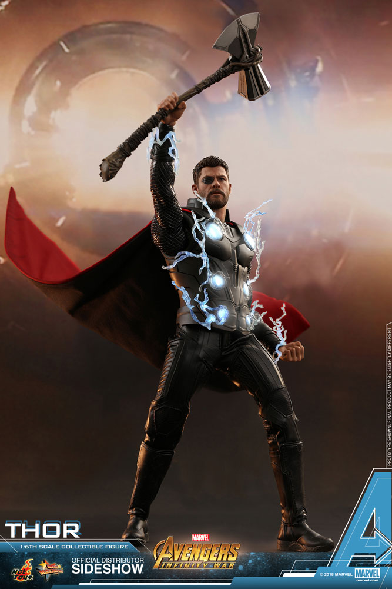
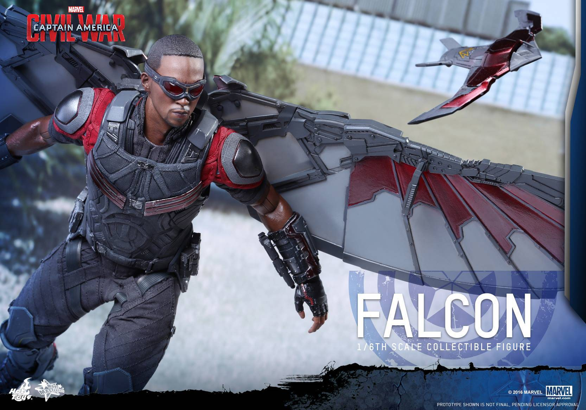
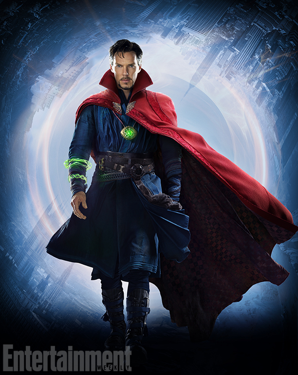

or
Now before I start with the information given, I would like to say that the information that is listed is the knowledge and what I understand of the Marvel Cinematic Universe and is not always the correct info. Also, spoiler alert if you haven't watched ANY of the Marvel Cinematic Universe movies. Seriously, IF YOU HAVE NOT WATCHED ANY MOVIES FROM THE MCU, GO WATCH AT LEAST ONE AND READ THIS SITE LATER ON. IT'S OKAY IF YOU HAVEN'T JUST GO DO IT! I WILL BE WAITING FOR YOU TO COME BACK AFTER. If you decide to come back that is. But without futher ado, let's get started.
First things first, THE AVENGERS. The Avengers Initiative (The Avengers), was an idea created by Nick Fury of S.H.I.E.L.D. in the 1990s. "There was an idea, Stark knows this, called the Avengers Initiative. The idea was to bring together a group of remarkable people, see if they could become something more. See if they could work together when we needed them to to fight the battles we never could." (Nick Fury, "Marvel's The Avengers" (2012)). Nick got inspiration for this project when he worked with Carol Danvers (Captain Marvel). Nick named the initiative "Avenger" because Carol's nickname when she was a pilot. Technially Carol is the first person in the initiative but she had left Earth to protect other planets. Soo, the first person in the initiative was Tony Stark (Iron Man). "No, Iron Man is not the Avenger, Captain America is. It's in the title you FAKE FAN. That's probably what you are thinking right? If yes, I will prove you wrong. If no, just keep reading. When the Avengers initiative was created, Captain America was still in ice, he wasn't re-discovered. So Captain America wasn't a viable canidate for the initiative at the time. That leaves Tony to be the first member in the Avenger initiative. Chronologically, the original members are Iron Man, Hulk, Black Widow, Thor, Captain America, and Hawkeye. And like all other teams, it exapands. The Avengers initiative then opened up to new heroes, to New Avengers...
It all started with the first Iron Man movie. The idea was to have solo movies with the main heroes and bring them together in one team up movie. Tony Stark is the genius billionaire playboy philanthropist who had gotten kidnapped by terroist group known as the 10 Rings. He managed to escape with a change of "heart". Get it because he had heart replaced. I'll show myself out. But while in a trapped state he had a arc reactor for a heart. The reason for this is because before he got kidnapped, he got hit by a frag grenade. The shrapnel was heading for heart. So, he had a doctor named Dr.Ho Yinsen replace his heart basically saving his life. But he left the cave with knowledge that changed his life forever. But after he fixed his "mistake", he decided to become a superhero with the suit of armor he had created. Becoming the avenger known as Iron Man.
By Hot Toys CC-BY
Now let's talk about the leader of the Avengers. Captain America in the MCU is technically 100 years old. Steve Rogers was born on July 4th, 1918. He had good heart, he wanted to be more to do more. But his physical appearence stopped him from doing this. Until a doctor by the name of Dr.Abraham Erskine gave him the opportunity to change his physical appearence. Of course Steve said yes and took the Super Soldier Serum. The bonding process of the serum was successful had became the new Steve Rogers. After doing some military propaganda shows he decided to go above and beyond, and went to go save military hostages from a Hydra base single handedly. After doing that, he became Capain America and had fought the HYDRA army. But he had to put a plane underwater to save the U.S from HYDRA. In the process he went to sleep for about 70 years. He was found by S.H.I.E.L.D and got defrosted. After a year of being awoken, he became the leader of the Avengers.
By Hot Toys CC-BY
In 2005, Bruce Banner was trying to repliate the Super Soldier Serum that as given to Steve Rogers A.K.A Captain America. When they tested the serum though, it turned Bruce into a uncontrollable monster that hurt everyone and everything in it's path. At that point the project was terminated altogether. For 7 years Bruce went into hiding keeping his temper straight, trying to not cause any collateral damage. But at one point he decided to meet Betty Ross (one of Hulk's victims). He caught up with her and decided to get help from her. But during that her father General Ross targeted Bruce and attacked him multiple times. When all of those attempts fail, Captain Emil Blonsky chose to take the same serum that Bruce to defeat the Hulk. He then became the Abomination. The reason why Blonsky took the serum is because he hated the Hulk and Banner. But later, Emil takes on the Hulk. At first Banner didn't want to fight in a crowded part of town such as Harlem. But he was forced to fight. Hulk started to lose, but he used the environment to his advantage. He started to used taxis as gloves, started doing ground stomps, and did the first Hulk Thunderclap. After a collection of beatings, the Hulk had won and Abomination was sent to S.H.I.E.L.D. After 2 years of hiding again, Bruce was called back into action in the Avengers as the tank of the team.

By YouTube CC-BY
In 965 A.D. Thor Odinson was born. The second child of Odin after Hela. During childhood he fantasized about how he was going to be like his father and destory the Frost Giants. In 2010 when Odin was about to proclaim Thor as all-father, Thor's ambitious came in the way of that. He made the stupid decision to go take on the Frost Giants. After that battle Odin demanded Thor and the others to come back to Asgard. When they came back, Odin banished Thor to Midgard(Earth) and took away his God of Thunder responsibility. When crash landed in New Mexico, he met Professor Erik Selvig, Jane Foster, and Darcy Lewis. He lived on Midgard for about 2 months until Loki sent the Destroyer to kill Thor. But luckily Odin gave his powers back because he thought that Thor had finally learned his lesson and to also live. Then all of a sudden Thor spawned in this tornado and destroyed the Destroyer. He had then traveled back to Asgard to defeat Loki and to put an end to his scheme. But in the process, he had destroyed the Rainbow Bridge which let others travel to other realms. So he had destroyed any chance to visit Jane and the others again. Also Loki "died" after the bridge was broken. And after 2 years of living on Asgard, Thor comes back to Midgard somehow to come bring Loki back to Asgard. In the process joined the Avengers to become the "God of Thunder" in the Avengers.
By Hot Toys CC-BY
BEST LANDING THOR HAS EVER DONE. Image from YouTube CC-BY
Clint Barton A.K.A Hawkeye was originally a S.H.I.E.L.D operative. His first appearence was in the first Thor movies as a cameo. In the movie his mission was to eliminate any intruders coming in the facility in New Mexico. But when Thor came in to once again wield the power of Thor, Coulson specifically told Barton to use a gun but he still chose to use a bow. When he had a clear shot on Thor he decided not to take it. His talents include master archery, acrobatics, and being a sharpshooter. His first main appearance was in the Avengers. During the prologue of the movie at the Project Pegasus base, Barton was dicussing the Tesseract's current unstable state. But when Loki came out of the portal created by the Tesseract, Loki immediately took control of Barton's heart/mind. So for most of the movie, Barton was on the opposing side. Luckily Natasha broke the trance that Barton had. When the incident happened, he was along side with the Avengers being the forgotten archer of the group. After the incident however he asked Nick Fury for a favor. The favor was for Barton having a family but having them be off the grid. Then after the Sokovia incident, Barton had retired from being an Avenger and S.H.I.E.L.D agent to become a family man. He was called back into action in Captain America: Civil War but sent to jail right after. But luckily with the heart that Steve has, Steve stealthily freed the Avengers that had been captured. Hawkeye then returned home under house arrest. Hawkeye was once known as the forgotten Avenger. But that all changed in Avengers: Endgame.

By Andy Park on Pinterest CC-BY
Natalia Alianova "Natasha" Romanoff is russian spy working for S.H.I.E.L.D. She was originally part of the Soviet agency for foreign intelligence. Natasha was born on 1984 in a part of Russia. At a young age she was recuited in the Soviet agency. Her first appearence was in Iron Man 2 posing as Natalie Rushman. She was on an undercover mission observing and helping Tony for the future Avengers Initiative. When it was time for her to come in to the Avengers. She was busy on an undercover job, but she changed her mond when Coulson mentioned Clint Barton (Hawkeye) being compromised. That was her turning point because Natasha thinks very highly of Barton. After the events of the first Avengers, she decided to permanently join the Avengers. She also cameoed in Captain America: The Winter Soldier. She helped Cap and Fury destory S.H.I.E.L.D. They did that because S.H.I.E.L.D had been compromised by Hydra. Natasha started questioning her job and dream. During that time of being an Avenger, she grew strong feelings for Bruce Banner (Hulk). But Hulk broke the chances of Banner and Natasha ever being together. But I hope Endgame changes that. Her skills include acrobatics, master in martial arts, master of stealth. Even though she agrees with Cap most of the time, she opposed with him in Civil War. She believes that it's better for Cap to sign the accords. She sides with the government even though she questions their decisions. But after the accident that happened between Vison and Rhodey at the airport, she decided to go off the grid with Cap and Sam. She came back for the Infinity War and lost everything. But it because of her that made the Avengers win in the endgame.
By Hot Toys CC-BY
The Infinity Stones are the different parts of life that had created the universe. After the creation, the stones formed into concentrated ingots. These include the Space Stone, Reality Stone, Time Stone, Mind Stone, Soul Stone, and the Power Stone. All of the stones have their own containment fields. The stones had been revealed since Captain America: The First Avenger with the Tesseract. If you are able to even to obtain even one of the Infinity Stones, you are basically immitating a god. Some Infinity Stones could even be used together to complete a certain task. After the forging of the Stone, a powerful being was able obtain the Power Stone used it to destroy a whole PLANET full of a living race.
Just to recap, the 6 Infinity Stones are:
Over the 10 years of Marvel movies, new heroes had risen and joined the Avengers. Some of these heroes include Black Panther, Doctor Strange, Ant-Man and more. But along the way, some Avengers left because of a certain diagreement or because that avenger went on their own path.
Sam Wilson was a former United States Air Force working as a pararescue airman. He had left the Air Force because his wing-man Riley had died in combat. Since then he was helping other military veterans get over their PTSD. Until He met Steve Rogers during a run around the Washinton Monument. Steve kept on teasing Sam with the infamous "On Your Left" Sam always had Cap's back. He helped Steve and Natasha get off the grid, helped defeat Hydra version 2.0, helped find Bucky even though he knew that he was a criminal. Even though Sam and Bucky don't get along especially because Bucky 1. tried to kill Sam and 2. destroyed his car. When Sam helped Cap, Steve had to go acquire a pair of wings from the Air Force. At first Steve assumed Sam was a pilot of a fighter jet. But Steve later found out that Sam was the pilot of project "FALCON". After taking down Hydra and finding Bucky, Sam acquired a new version of the wings. It was a big upgrade because it was like a reconnaissance drone with weapons. Which detaches from the back of the wing backpack and called it Red Wing. But that was later taken from him by Everett Ross. Everett Ross is the son of General Thaddeus Thunderbolt Ross and is part of the CIA. Unfortunately he was one of the victims of the "Decimation" A.K.A the "Snap". During his last few seconds, he was calling out for his best friend Steve Rogers.
"Falcon" By ComicBook.com CC-BY

"The New Captain America" By ComicBook.com CC-BY
Doctor Stephen Strange was a skilled neurosurgeon untl he went into a car crash. The car crash resulted him into losing the ability to use his hands. For years, he couldn't do anything. He lost his job and was a nomad until he traveled to Tibet. He discovered the school of the mystic arts known as Karmartaj. There he sought out the help of the Ancient One. Stephen hoped to regain his ability to use his hands. But he learned the mystic arts. He was able to A.regain the ability to use his hands and B. learn the mystic arts to protect the Earth from any threat. When he had learned the mystic arts decently, he was told not to touch anything. But with the way the reverse psychology works, Stephen was tempted to touch anything that was incased. He first looked at the Cloak of Levitation. Which was immediately fond of Strange. Next it was the Eye of Agamotto. Which contains the Time Stone which is an Infinity Stone. Just one of the most powerful things in the universe.By taking the Eye of Agamotto, he has the responsibility of keeping the Time Stone safe by any means necessary.
By Entertainment Weekly CC-BY
T'Challa is the son of T'Chaka. He is now the new king of Wakanda. To gain the throne, he had to fight on Challenge Day. He had to fight anyone that wanted the throne. If accepted, one of them either has to yield or die.T'Challa almost won the throne clean until M'Baku. M'Baku is the leader of Jabrari tribe also known as the White Gorilla tribe. M'Baku challenged T'Challa to the challenge and almost won. T'Challa had forced M'Baku to yield because he didn't want to kill him. After capuring the throne to Wakanda, T'Challa took Okoye and Nakia to North Korea. They hoped to get Ulysses Klaw, who had been stealing Wakandian Vibranium from Wakanda illegally. With the help of T'Challa's new suit, Okoye's skills, Nakia's tactics, and Shuri's technology, they managed to take down Klaw. He was then broken out by a mysterious person. When they got out, the guy revealed himself to be Erik Kilmonger son of N'Jobu. He double crossed Klaw by killing him and delivering him to Wakanda. He returned home to gain the throne, T'Challa first rejected but after learning that Erik if T'Challa's cousin. He accepted. Erik won the throne and "killed" T'Challa. T'Challa washed up on the Jabari territory. Queen Ramonda (mother of T'Challa and Shuri), Shuri, and Nakia came to the Jabari mountain when they heard about T'Challa. They helped him get better to get the throne back for the Wakandian name. After a long battle in the subway tunnel, T'Challa was able to defeat Erik. Before he died, Erik wished to watch the sunset and die in peace because he still had the dagger in his chest. But after the watching, he decided to kill himself by removing the dagger. He knew it was better to die rather than being locked up. During the events of Infinity war however, he helped the Avengers keep Vision safe and kept the fight with the Outriders outside of the city of Wakanda.

By Onesixthoutfitters.com CC-BY
Scott Lang was a former cat burglar who was going for one last score. His friend Luis found a potential house to loot. The house belonged to Hank Pym, one of the most famous scientist in the country. At the time Hank had retired from being the scientist who created the Pym Particle and from being the Ant-Man. After the passing of his wife during a mission, he decided to retire. After Scott stole the suit he immediately decided to return it because he wanted no part in the what the Pym Particle could do. But after getting caught by the police for returning a stolen item, Hank gave the suit to Scott because he knew how to use it properly. With the power of ants and the Pym Particle, Scott managed to get out of city jail. Hank and his daughter Hope Van Dyne decided to train Scott to become the new Ant-Man. They did that because Hank believed that Scott replace him and stop Darren Cross from selling his replicated Pym Paticle. Scott took Darren down and became silent. After 1 year however. Sam Wilson A.K.A Falcon called Scott to join the Avengers because during the events of Ant-Man, Scott beat up Sam when he had Red Wing. Cap gave the okay and sent Barton to go retrieve Scott. Scott arrived in a white van fighting along side Cap at the airport. Fun fact, Scott can shrink so small that he can get inside the Iron Man suit. After the event of the Airport battle, Scott was sent to the Raft because he fought along side a "fugitive". He then was house arrest by the CIA. He snuck out from being on house arrest to fight with Hank and Hope. Who has now acquired the new Wasp suit. Scott also took down the Ghost and saved Hank from the Quantum Realm. Hank was trying to save Janet Van Dyne. Hank's wife vand Hope's mother. After sorting out everything, Hank decided to send Scott to the Quantum Realm. The Quamtum Realm is the dimension where Janet was trapped in, and is a dimension related to time. This experiment was taking place right before the Decimation (the Snap). After the Snap however, Scott was shown stuck in the Quantum Realm with no way out. Janet, Hope, and Hank had faded away because of the Decimation.

By Onesixthoutfitters.com CC-BY
Vision was a vibranium body with no personality/life. Ultron was going to input his conscientious in Vision. But the Avengers incepted the transfer. Ultron then had the Vision body transported in a korean medical truck. But while Ultron was fighting Cap, Black Widow took the body and slid it into the Quinjet. Barton then took it to Stark at Avenger's Tower. Stark and Banner then worked for hours to convert J.A.R.V.I.S 's matrix into the Vision body. Cap and the Maximoff twins had tried to stop them but Thor had entered the building with the knowledge from his vision. He then shot a beam of electricity at the box with the body. Thor did that because he knew that Ultron stole the Mind Stone from Loki's scepter. And that he put it on the Vision body. That was when Vision was born. Vision had become aggressive against Thor at first. But when he saw the city, he became calm. He explained to them that he wanted peace without any harm. Wanda did not believe him because of the fact that she read his mind when Ultron was transferring his conscientious into Vision's mind. But Vision was ab le to redeem himself during the battle at Sokovia. He locked Ultron out of the internet, which prevented him from transferring his conscientious into another body. He saved Wanda from a train that was getting destroyed and helped the fight against Ultron. During the events of Civil War, he sided with government because he also feels that the Avengers/crime fighters need restrictions. During the airport battle, he was manipulated by Wanda to shoot at War Machine. Which led War Machine to be in the hospital. The fall led Rhodey to have a spinal injury paralyzing him. Vision never forgave himself for that. In Infinity War, he was hiding in Scotland with Wanda. Living his life with her until being hunted by the Black Order.
By Sideshow.com CC-BY
Wanda Maximoff is the twin sister of Pietro Maximoff. Her brother and she volunteered at Hydra from experimentation. Pietro and Wanda gained powers from the stolen Mind Stone from Hydra. Wanda gained the power of magic, telekinsis, and mind control. Shockingly the Mind Stone gave someone the power to destroy itself. Yep, Wanda is so powerful, that she could destroy an Infinity Stone. Pietro on the other hand gained the power super speed. At first furing Avengers: Age of Ultron, Wanda was on the opposing side of the Avengers. Her first encounter with the Avengers left the Avengers with a vision of their past/ past. We have seen the visions of most of the Avengers except for 2 avengers. Hulk and Hawkeye, Hulk was pissed by the vision but wasn't shown. Hawkeye on the other hand wasn't affected by the spell. He anticipated Wanda casting the spell. So Barton put an electric arrow to her forehead. Pietro saved her and took her to Korea with Ultron. After discovering Ultron's main plan, Wanda and Pietro left from Ultron's posse and sided with the Avengers. After the events of the Sokovia battle, Wanda went to the train where Ultron was. She gave him a lecture anout death, and killed Ultron's vibranium body. She then joined the Avengers as Scarlet Witch. After Crossbones' attempt at bombing a part of town, Scarlet Witch decided to contain the blast. But she couldn't hold the blast for long. She directed Crossbones into a building with the blast detonating. Wanda then activated a series of events that led to the Sokovia Accords. Wanda felt ashamed for her deeds and locked herself in her room at the Avengers Facility. Until Barton convinced her to get out of the room Tony Stark and locked her in. Barton was able to take down Vision who had been watching and keeping Wanda in her room. Wanda then fought at the airport battle and was sent to the Raft after the battle. During Infinity War, Wanda was keeping Vision safe from the Black Order and destroyed the Mind Stone. Even though she hesitated from doing so.
By Pinterest CC-BY
Colonel James Rhodes is a weapons expert in the military. He is the best friend to Tony Stark which was beneficial at the time because if he didn't have a good relationship with him. Then Stark wouldn't have been able to sell weapons to the military. But even after Stark shut down the weapons division of Stark Industries, Rhodey was still there for Stark. During the events of Iron Man 1, Rhodey had no part in his decisions and did not wear the mark II armor. He only wore the mark II suit in Iron Man 2. He wore the suit to shut down Stark's party. At the time Stark had a virus going through his Arc Reactor. Stark had become drunk for his birthday party which started to go off the rails. Rhodey decided it would be best if he would close it down. But in the process, Rhodey and Stark had a brawl which ended with A. Rhodey winning B. Rhodey stealing the mark II suit and C. temporarily ending their friendship. Rhodey then took the suit to the military base in the Mojave Desert. The military and Rhodey decided to weaponize the mark II suit, primaily because Stark created the suit to be a test flight suit. The military decided to put weapons from Hammer Industries. Hammer Industries is known for A, being Stark's competitor and B. having potato quality items. Secretly when Ivan Vanko A.K.A Whiplash was working for Hammer, he implanted a remote control chip on the suit to control the suit with Rhodey in it. Luckily Natasha broke the 'spell' and set Rhodey to be in his own suit. Rhodey immediately knew how to use the suit and used it to fight along side Stark against Vanko. Over the years he gained new versions of he suit. In Iron Man 3 he gained the Iron Patriot. Which was a suit that represented the relationship between War Machine and the government. In Avengers Age of Ultron, he wore the War Machine mark II, which was basically the original suit just with an upgraded turret and is in gray. In Civil War, he wore the mark III version of the War Machine suit. Which added extra durability and a electric baton. In Infinity War, he wore the mark IV suit that was connected to his spinal harness, which helped him stand and walk. He needed that because during the airport battle in Civil War, he got injured his spinal cord. In Endgame he will acquire a hulkbuster suit equivalent.

By Hot Toys CC-BY
Peter Benjamin Parker is the only son of Richard and May Parker. After the dissapearence of his parents, he was taken care of by his Uncle Ben and Aunt May. During a field trip to a laboratory, Peter was bitten by a radioactive spider. Which gave him the abilities of a spider. At first he didn't know about his powers but after discovering them, he wanted to do nothing with them. Then one day his Uncle Ben got murdered by a robber who just robbed a convienience store. After his funeral and murder, Peter decided to follow by Uncle Ben's saying. the famous saying of "With great power comes great responsibility." Peter then created a homemade suit created with a hoodie, binoculars, a pair of sweats, black gloves, and custom web shooters. In Civil War, he was shown stopping a car that was going 40 miles per hour. That was the reason why Stark recuited Peter on his team. Peter went to Germany and fought at the airport battle. He was then went back home because he got exhausted and didn't want to risk his death. When Peter came back he had the permisssion to keep the Stark enhanced suit the Stark gave him for the battle at the airport. So for next few months, Peter has been becoming the friendly neighborhood Spider-Man he was mean't to be. Peter helped people with robberies and muggers. Until one day when there was a robbery at a bank. Peter wanted to prove himself worthy of an Avengers so he went to go stop the robbers. He was successful and unsuccessful at the same time. He stopped the robbers but one of the robbers pulled a blaster that was Chitatauri technology. The blast destroyed a corner front store. Luckily Peter was fast enough to get the people in the store out of the burning store. Peter then started to investigate the Chitatauri tech and found that a group of people were having a meet up for trading the items. Stark had to then save his life from drowning in a lake. He the nwarned him not to mess with this stuff, because this is for the Avengers. But Peter wanted to prove himself so he disobeyed Stark and went for the dealers. He then found the buyer at the meet up and decided to interrogate him. He had his suit taken away because he disobeyed Stark. Which became a turing point for Peter because he had to realize that it's not the suit that makes the hero but rather the hero himself. Soon after he found out who the master of the plan is. It was Adrian Toomes (the Vulture) who was also the step father to his crush and homecoming date. But he ditched the homecoming dance to go take down Vulture. He managed to take him down but with the price of losing his date. But he was able to prove himself to Stark. He was given the opportunity to become an Avenger and to wear the Iron Spider suit. He turned it down because he realized that it's better to be grounded and at the bottom than to be at the top. During the events of Infinity War, Peter was appointed the newest avenger of the Avengers. But he was one of the victim's of the Decimation A.K.A the Snap. Delivering one of the most saddest lines in the MCU. "I don't wanna go Mr. Stark, please I don't wanna go. I'm sorry." He had said frighteningly. It was especially scary for him because he knew about the Snap and how it was going to get him. He knew about the Snap because of his Spider-Sense.

By Porosh Khan CC-BY-NC-ND

By Porosh Khan CC-BY-NC-ND
James Buchanan Barnes was a soldier in the 107th Infantry Regiment. He was captured by Hydra when he was stationed near one of their bases. Steve heard about the news from an associate of Colonel Phillips. He then disobeyed Phillips' to save the Regiment. He saved the Regiment and Bucky. But in the process he was able to gain intel about Hydra's plan. So without Bucky getting captured, Cap wouldn't have been able to get the information about Hydra. After showing Phillips the plan, he wanted to have a team to lead and to defeat Hydra. He thought that he could have the Regiment on his team. Of course Bucky being Cap's best friend, he immediately sided with Cap. Bucky then convinced the others to join Cap which he appreciated. But when they went on a mission on a Hydra train. Bucky had fell into the canyon assumed dead. But secretly Hydra had discovered him and brainwashed him. When he fell he had his arm amputated and replaced with a metal arm. He then got trained to become an unstoppable assassin working for Hydra. But because of him getting brainwashed everytime he remembered something, Hydra decided to give him a trigger sequence. When the sequence is triggered Bucky becomes the Winter Soldier. During the events of Captain America: The Winter Soldier, they explained that Bucky was also under deep freeze to keep him alive. When he was defrosted, he had a task of assassinating Nick Fury. He was assumed dead, so that would mean that he completed his mission. He was then assigned to kill Cap. But with Cap's heart and reasoning, he was able to get through Bucky's brainwash and keep him from Killing Cap. When Cap had fallen off the helicarrier Bucky decided to save him and get him to shore. He then walked away as if it was nothing. He went to Germany to keep himself away from everyone to cause no harm. But in Captain America: Civil War, he was found by Sam and Cap. He had beome a fugitive who was being hunted. He then got caught by the CIA and taken into custody. But a Sokovian citizen had infiltrated the CIA to annouce the trigger sequence of Bucky. He then went on to become in Winter Soldier mode. He was interrupted multiple times by: Black Widow, Agent 13, Tony Stark and T'Challa. At the time he was framed of killing T'Chaka who was at the time the King of Wakanda and the father to T'Challa. Bucky then went on the run to snap out of the trance. He had fought for his freedom at the airport battle in Berlin. He got away with Cap and went to Siberia. He investigated the area and found out thatt he wasn't the only Winter Soldier. He realized that Hydra was proud of Bucky so much that they decided to create the Winter Soldier program. It gave people the ability to gain a metal prosthetic and to fight for Hydra. But the program went in the wrong path. He was the only one that survived the chaos that had happened. Stark had then caught up to them realizing that he was wrong about Bucky's actions. But he found out that Bucky was the one who had murdered his parents. He started to fight Bucky. He fought him as if he wanted to kill him. After the fight Bucky had lost his metal arm. He was then taken to Wakanda to be in hiding, and to gain a vibranium arm. During the events of Infinity War, he fought in the Wakanda battle and was one of the victims of the Decimation.

By Marvel Cinematic Universe Wiki CC-BY
Carol Danvers was an air force pilot who had cared for peace in the world. She had went on a secret mission with her friend Dr. Wendy Lawson. She was tasked to fly outside the Earth's atmosphere to deliver the light speed engine Lawson had made. She was then caught into a dogfight between her and Yon-Rogg. Yon-Rogg is a member of the Kree military team known as the Star Force. Carol had then crashed into a lake after one of her wings was destroyed. Yon-Rogg landed in front of them to acquire the light speed engine. He had killed Wendy who had A. revealed herself to be Mar-Vell from Hala and B. tried to destroy the engine. Carol took the gun from Mar-Vell's hand and pointed it at Yon-Rogg. She then threatened to destroy the engine if Yon-Rogg did anything. But she did it anyway. She did it because it was Mar-Vell's dying wish. When the engine exploded, Carol was exposed to the radiation that is similar to the radiation of the Tesseract. She had became unconscious with her fist glowing. Yon-Rogg then figured out that the radiation had been absorbed by Carol. He thought that it would be a good idea to abduct her and brainwash her. Yon-Rogg took Carol to Hala, the world of the Kree. They took her to the A.I intelligence to brainwash her. They then implanted fake memories in her cortex. They made her think that the Skrull race were savages and an intolerable alien race. She was then taining with her "best friend" Yon-Rogg to control her powers. She joined the Star-Force. And she is a stubborn soldier. She brings humor and a boost in fun to the Star-Force. During a mission on Torfa. Torfa is the planet of the Kree border which is an abandoned planet. Carol or Vers as she referred to now, got taken to Talos. Talos is the leader of the Skrulls. The Skrulls were poking through her memories to look for the coordinates of the Light Speed engine. They got closer but not fully there yet. They figutred out that the Light Speed engine was last seen on Earth. When Carol woke up, she escaped and crash landed on C-53. C-53 is the galactic name for Earth. She then contacted Yon-Roog and told him that she wasn't going to go back yet. Nick Fury then caught up with her because she had crashed into a Blockbuster. Which made it look like she broke in. A Skrull tried to assassinate Carol but had failed because she noticed him in time. Then cue the chase scene of the movie. The Skrull gets caught and goes the S.H.I.E.L.D morgue. Carol then catches up with Fury and goes to the Project Pegasus site. They find out that Lawson is dead and the only other person knew her was Monica Rambeau. Monica was Carol's best friend and was a pilot with her. Talos then infiltrates Rambeau's home and explains Talos reason of poking through Carol's memories and his mission. Carol discovers her past and finds out she has been lied to by Yon-Rogg. She gets the help from Rambeau's daughter to change her style before she goes to Mar-Vell's lab. When she arrived she saw a 'tribe' of Skrulls hiding and the Tesseract. The Star-Force heard about Vers going rogue and went after her. They then battled with Carol and lost. Back on Earth, Rambeau and fury safely landed while Carol had been destroying the Star-Force's ships. After that she came to Earth to take down Yon-Rogg who had tried to take down Rambeau. She then sent Yon-Rogg back to Hala with the message of to never to come to Earth ever again. Carol celebrated their victory with dinner and with presenting Fury with his old pager. Carol had upgraded it to communicate through galaxies. She told him to only use it in extreme emergencies. Since the Snap is a time for extreme help, Fury had activated the pager before he faded.

By Hot Toys CC-BY
I'm too lazy to do the research for the Guardians of the Galaxy also I don't really care for the Guardians much. Primarily because the captain "Star Lord" caused the Snap in the first place. IF ONLY HE DIDN'T 'SNAP' AND PUNCH THANOS TOOO EARLY!!! But that's besides the point, I'm just too tired and lazy to do the Guardians of the Galaxy. Sorry. :(
Let's take a break from being on this page. Let's explore the other thng in the world of the MCU. Let's talk about the famous landmarks, villains, and other characters.
From 1982 to 2020, there have been many video games that are based around the Marvel heroes and properties. Since this site is all about the Marvel Cinematic Universe maight as well talk about the Marvel games that are revolved around the Marvel characters that are in the Marvel Cinematic Universe or simply the MCU. First up on the list is:
The first Marvel game was Spider-Man which came out in 1982 for the Atari 2600. The goal of the game was to make it to the top of the building, You can swing, and pull yourself up with webs. On the way, you will encounter criminals that are looking out the window. If you like to you could possibly kick them out of the window. At the top could be a villain from Spidey's rogue gallery. In general it's a pretty horrible game.
You can see for yourself if you can endure the pain. Spider-Man Atari 2600
Captain America in:The Doom Tube of Dr. Megalomann was made in 1987 for the Atari ST, Amiga, Amstrad CPC, Commodore 64, and the ZX Spectrum. Honestly I don't understand this game. The only I understand from this game is that Cap has to defeat Dr.Megalomann and Cap is trapped in some kind of labyrinth by the doctor. The only thing good about this game though is the shield throwing. When thrown the shield can ricochet from the wall & always come back in Cap's arms. Here is the horrible gameplay : Captain America's Weird Game
This game came out in 1989 for the Amiga, Amstrad CPC, Atari ST, Commodore 64, DOS, and ZX Spectrum. This game is a beat em' up style game with Captain America and Spider-Man. But instead of fighting waves of street thugs, you fight rogues from the Spider-Man gallery, Avengers gallery , Masters of Evil and the Captain's gallery. The boss battle of the game is Doctor Doom.
Here is the gameplay of this decent Marvel game: Victor's Vevenge
I skipped the first amazing Spider-Man game because I couldn't find any kind of gameplay videos. So I am going to talk about the second amazing Spider-Man that came out in 1990 for the Game Boy. This game has a Mario and beat em' up style to it. The main villain of the game is Mysterio. The player can swing, beat thugsup, climb up walls, and is portable. The game seems pretty simple but from what I have seen from gameplay, the game seems fun.
Here's the gameplay: Spider-Man Gameboy
This game is a spinoff of "The Amazing Spider-Man(1990)". But it has the same infustructure from Nintendo's/Acclaim Entertainment's but minor upgrades in graphics, level design, and enemies. The spinoff came out in same year as the original, 1990. The platform is was on was the Sega Genesis, Master System, Game Gear, and the Sega CD. If you can't tell, all of these platforms have one thing in common. They are all made from Sega, it's because the game was made by Sega. The final boss of the game is obviously the big boss himself Wilson Fisk otherwise known as the... KINGPIN.
Here's the gameplay for this spinoff:The Amazing Spider-Man Vs. the Kingpin
Now this is a bit cheeky but I'm going to talk about the 2 Punisher games that came out in 1990. The first one came out for the NES while the second came out for the Amiga, Atari ST, and the DOS. The NES version of the Punisher has a duck hunt infustructure while you continuously side scroll through the level. The final boss fight in the game is defeating a mob boss. Let's begin with the second version of the Punisher. This version has similar ingredients as the original "Doom". It is a first person shooter with the ability to punish criminals as with lead. In my opinion, there are both lack luster but fun at the time.
Here are both of the gameplays:The Punisher (NES) and The Punisher (Atari ST)
This Punisher game came out in 1991 for the Game Boy. Ultimate Payback is more of a combination of the 2 previous games. It's in a first person camera, you punish criminals with lead, but you side scroll through the levels. The boss is just a mob boss that acts like all the other enemies. Instead of saying what you just read, just say it's a Duck Hunt copycat for Punisher.
Here's the copycat:The Punisher's Payback
I feeling a bit lazy to do research on games from years 1991 to early 2000. SO I am going to start on Spider-Man 2000. The Marvel game that 'leveled up' Marvel's view of gaming.
Before I give you the overview of this game. You should know a little bit about this game RIGHT!?! I mean if you don't know about the influence that this game brought then,... you are REALLY out of touch. But in all seriousness, you deserve to know more about this game. Spider-Man 2000 came out in, can you guess? It came out in the year... 2000. It was for the Dreamcast, Mac OS, Nintendo 64, PlayStation, Microsoft Windows, and the Game Boy Color. This game was the first Marvel game to be 3D. Every game before that was always 2D. In addition, it had a semi open world. If the player was in a level which requires you chase the target, the player would have the ability to swing through city rooftops. The main villain of the game is non-other than Doctor Octopus. Doc Ock and other foes of Spider-Man try to take him down but fail because the hero always win in the end. The final boss of the game is Doc Ock and Cletus Casady as Carnage. First the player defeats the duo separately then, fights 'Doctor Carnage'. A combinatation of Otto Octavius and the Carnage symbiote. Throughout the game the player would encounter cameos from other heroes/friends of Spidey, such as Captain America, the Punisher, Daredevil, and the Black Cat. Overall this game made a giant leap into the gaming industry for Marvel and gave them the push they needed to strive for MARVELous entertainment.
Here's the clearly dated gameplay:Spider-Man 2000
This sequel came out in the year after the original; 2001. It was exclusively on the Game Boy Color, because I guess Spider-Man 2000 sold a lot for the Game Boy Color. This game wasn't like the home console versions Spider-Man. The Game Boy Color version of both games were in 2D but in COLOR. In comparison to the other portable versions of Spider-Man, this one was actually fun. The game added comic punch bubbles to make the game more funny. Also has gotten more fast pace than the original. The main focus for the game is to find and defeat the Sinister Six. Also save Aunt May who has been taken hostage the Sinister Six. The boss fight is more or less the same, the player just as to defeat normal Doc Ock. In my opinion the original was better. The sequel was more of a let down.
Here's the gameplay:Spider-Man 2: The Sinister Six
Unlike the Game Boy Color version of a sequel, the home console version of a sequel was a big hit. It has the same infustructure as the first game but has a different story and main villain. It came out in the same year as the Game Boy Color version but instead of being for the Game Boy Color obviously, it was exclusively for the original Playstation. It brings the Spider-Armor back from the first game and brings Spidey's best friend, the Wolverine as a cameo. This game also brought in one of the BEST features that the origianl didn't have. That is... a world with ground. That's right no more running through city rooftops to get out of a chase. The player can now roam free on the ground level of Manhattan. The boss fight has a gotten a big upgrade too. Since the main villain is now Electro instead of Doc Ock, that opens up more opportunities for an intricate final boss fight level design. In the boss fight against Electro there are 2 parts, I going to talk about the second part thogh because it looks. more fun than the first part. In the seond half of the fight, Spidey has to make Electro waste his electric power by standing behind power generators. It's sounds simple, but it's looks fun. So, this sequel to Spider-Man 2000 was a good upgrade and successor to the original.
Here's the gameplay, also start at 1:27:45 for the final boss:Spider-Man 2:Enter Electro
Spider-Man: Mysterio Menace is a game for the Game Boy Advance and came out in 2001. It's kind of like the Spider-Man 2000 (GBC) and Spider-Man 2: The Sinister Six. It has the gameplay mechanics as Spider-Man 2: The Sinister Six but has the fluidity and graphics as Spider-Man 2000 (GBC). The main villain of the game is Mysterio while having other Spider-Man villains as side bosses. In my opinion, this game made up for the horrible game that is Spider-Man 2: The Sinister Six.
Here's the gameplay:Spider-Man Mysterio Menace
This game is the first Spider-Man game that is tied in with a movie. Like Spider-Man 2000, it's a 3D level based game. It has moments from the Spider-Man film which came out in 2002. This game was designed for the PS2, GameCube, original Xbox, GBA, and for Windows. There are 22 levels with 3 sections on each. The graphics are big upgrade from Spider-Man 2: Enter Electro. The main villain is of course the Green Goblin. The side boss fights include the Shocker, the Vulture, and others. Now since this game is before the amazing Spider-Man 2 (2004), the webs when swinging go up in the clouds. The story was pretty intriguing and fun to play through (at the time, not so much in the present).
Here's the gameplay:Spider Man: the Movie Game
This game, "The Invincible Iron Man" came out in 2002 for the Game Boy Advance. The publisher of this game was Activision. This game fit him the platformer genre. The suit that Tony Stark wore was the original gold and red suit. The suit was from the comics, since Iron Man didn't have a movie back in 2002. The game mostly resembles Mega Man. Iron Man doesn't fly but can blast from his repulser. This was basically the first solo Iron Man. The only other appearence of Iron Man in video games was in "Iron Man and X-O Manowar in Heavy Metal". That's pretty much everything that this game can say about itself.
Here's the gameplay:The Invincible Iron Man
The game "Daredevil" was the Daredevil's first game ever. It was released on 2003 for the Game Boy Advance. The publisher for this game was Encore Inc. I don't know what the technical genre of this game is, but the way I would describe it would be a; a side scroller, single player fighting game. The average length of this game is about 8 hours. The boss battle of this game is the Kingpin. This game was primarily made because the horrible Daredevil movie came out at the time. Luckily Marvel revived him in the Netflix show. But aside from the flim, the game looked fun to play especially on a handheld.
Here's the gameplay:Daredevil
The next game I going to talk about is "The Incredible Hulk." No, this not based on the movie that came out in 2008. The game came out in 2003, same as the Daredevil game. This game came out for the Game Boy Advance. It then came out out for the GameCube, PlayStation 2, Xbox, and Microsoft Windows. The publisher for both games was Vivendi Universal Games/Universal Interactive. Instead of being based on the 2008 film of the Hulk. This Game was based on the 2003 film. You know the horrible CGI Hulk. Luckily this is WAY before the MCU. So this is not canon, so Hulk never punches a dog in the genitals. The genre of this game is kinda like a top down League of Legends kind of game. the villain of this game is Leader. The Leader is an alien with psychic powers. He also has a immense amount revenge on the Hulk. His mission is to destroy the Hulk with a gamma bomb. Overall, the game is a 5/10 while the movie is a 1/10.
Here's the gameplay:The Incredible Hulk (2003
So this game. Spider-Man 2 was known as the best Spider-Man game in general (now dethroned because of Spider man PS4). Spider-Man 2 was a movie tie-in game. It was based on the critically acclaimed sequel to the first movie, Sam Raimi's Spider-Man 2. It was released in 2004. Surprisingly the publisher of this game was Treyarch, you know the creator of Call of Duty: Black Ops. This game was well known for the physics in the web swinging. The physics made the webs ACTUALLY stick to the walls of buildings. Also I'm mostly talking about the version of the PS2, since it was the best one. The graphics have aged A LOT, but true fans didn't care. They would still play this game just because of the physics. Sadly though, games after this one didn't use this web swinging physic's engine. But since it was a movie tie-in, the story is loosely based on the movie adding non-canon things in. Like Mysterio and other characters.
Here's the aged gameplay:Dethroned Best Spider-Man Game
Ultimate Spider-Man the game was released in 2005 for the Nintendo DS, GameCube, PlayStation 2, Xbox, Microsoft Windows,and Game Boy Advance by Treyarch of Activision. The style of this game is in a comic book style of art and design. The main villain of this game is Venom. Peter is in his teens attending Midtown High. But when Peter realizes the truth about his father and that he had created a symbiote, he retaliated. He took for himself and tried to use it to be the "ultimate" Spider-Man. But that fails because Peter realizes that the symbiote has been taking over his body gradually. After that, he took it off and left it where he got it from. What Peter didn't realize was that Eddie Brock Jr. Who is the son of Eddie Brock Sr., who also worked the symbiote project. Took it to get revenge on Peter. But at the end of the day, the symbiote was put to rest.
Here's the gameplay:Ultimate Spider-Man
Before I start with this game, there was another Marvel before this one. It was The Incredible Hulk: Ultimate Destruction, but let's be honest. There will never be 'good' Hulk game. The only exception is the 2008 movie tie-in game but that's it. That's beside the point, it's time to talk about the game at hand: Marvel Ultimate Alliance. This game is more like a single player MMO-RPG. You get to pick 4 heroes of your choice and go on mission. It has said to be 140+ playable characters in the game with two hands full of costumes for those characters. It came for the Xbox, PlayStation 2, Microsoft Windows, Xbox 360, Game Boy Advance, PlayStation Portable, Wii, PlayStation 3, and was remastered for the PlayStation 4 and Xbox One. the publisher for this game was Activision. This game came out in 2006. In this game, your goal is to defeat the villains that are plotting revenge against the heroes. The final boss of the game is Galactus who is planning to eat the Earth. In general this game looks really fun and engaging to the average Marvel and gaming fan. Before the remaster, the graphics looked like 2006 in general. Luckily because of the remaster, the graphics look more up to date and modernis.
Here's the gameplay:Marvel Ultimate Alliance
This game is a prequel to 2005's Ultimate Spider-Man. This game came out in 2006 by Activison. This game came out on the Game Boy Advance and Nintendo DS. The plot of the game is that Norman Osborn finds out that Peter Parker is the friendly neighborhood Spider-Man. He also found out how Peter got his powers. Having this knowledge makes him want to recreate the event on himself hoping that he could be better subject than Peter. But instead of having spider powere, he gained goblin powers. Because of his frustration, he went out of his way to become Peter's arch-enemy. That is how he became the Green Goblin. After Osborn's tranformation,Peter tried to save the day.
Here's the gameplay:Spider-Man Battle for New York
This the last game in the Spider-Man Raimi trilogy. Don't worry, this game is slightly better than the movie. It came out for the PS3, PS2, and the Xbox 360. Unfortunately though, this game doesn't bring the swinging physics from Spider-Man 2 to this game. Like I said before, Spider-Man 2 was first and last game to use the physics mechanic. The game is loosley based off from the movie. It starts differently from the movie and starts with a street war between gangs and rivals. Most of the game is non-canon and is made to make money. The canon parts from the movie only come sometimes, especially when Sandman, the symbiote black suit, Harry Osborn Green Goblin, and Venom come in. The gameplay is good but the story isn't fluent with the different storyline. Same as the Spider-Man 3 movie.
Here's the gameplay:Spider-Man is in an Identity Crisis
This game holds a special place in my heart for 2 reasons:1) First semi-open world Iron Man game 2) The first movie in the MCU transfered to a video game. This game's publisher is SEGA. The platforms it came out for was the Nintendo DS, PlayStation 2, PlayStation 3, Wii, and Xbox 360. Now of course this is a movie tie-in game. Which means this going to go badly, which it does. Like the movie it starts with Tony getting kidnapped by a terrorist group from Afghanistan called the 10 Rings. The storyline is somewhat similar to the movie but add the sub-storyline of A.I.M. The first armor the player gets to play as is of course the faulty Mark I. After that Tony goes on a rant and finally shuts down the weapon manufacturing division of Stark International. He also makes it his mission to destroy any faux versions of the Iron Man suit and his weapons. Before he makes that his mission, he created the Mark II for a flight test and creates the Mark III for weapons and for a permanent equipped armor. But this game did pretty poorly on the ratings on everything.
Here's the gameplay: Iron Man 2008 Game
This is another movie tie-in game related to "The Incredible Hulk" 2008 film. The game has a similar premise as the movie. It starts with Bruce trying to be off the grid then getting called back into action bringing the chaotic green monster with him. The game is SO similar to the movie that I don't need to explain it to you; just go watch the movie.
Here's the gameplay: The Incredible Hulk
This spidey game came out in 2008 for Microsoft Windows, Nintendo DS, PlayStation 2, PlayStation 3, PlayStation Portable, Xbox 360, and Wii. The publisher of the game is Actvision. The game is a open world game with good and bad choices. The player can either choose the good or bad choices in the game. The player and also choose to wear the classic red and blue suit or go bad and wear the black symbiote suit. In my opinion, it was a good game but it did some things that didn't really suit the narrative. For example, with the vulture. They didn't have to bring up the vulture in the first place. Sure they could've just used him in a boss fight, but just leave it at that. One thing they did amazing in was bringing in the character, Moon Knight. They chose to stick with th original material and didn't change anything to make him a COMPLETELY different character. The boss fight in the game was Venom who already had the symbiote. But during the game, Eddie spead the symbiote like a disease. The whole population of Manhattan turned in to a symbiote solider. The only way to revert them back is to defeat the source. Before I forget, their is also a cameo from Wolverine from the X-Men.
Here's the gameplay:Spider-Man: Web of Shadows.
This game... this game is a MASTERPIECE of Spider-Man games. No, it's a masterpiece of Marvel in general. The story takes place when Peter is 23 and has been Spider-Man for 8 years. At this point, Peter has broken up with MJ and is about to put Wilson Fisk in the "Raft". After putting Fisk in prison, Peter looks to maintain his life between Spider-Man and Peter Parker. While swinging through the city and the story, a certain friend of Peter's tries to create a certain group from the comics. Their goal is to get revenge on someone very "important". I don't want to spoil to much.. SOOO just watch the gameplay.
MASTERPIECE:Spider-Man 2018
Since I chose to skip the sequel to the original, I am going to "review" the third installment of the series. The game has the mechanics has the previous games but has updated graphics and character roster. The games character roster includes heros from the MCU and the X-Men. The plot is basically a watered down version of the precise from Avengers: Infinity War. Thanos, the mad titan, sets on a quest to find the six Infinity Stones. With the help of the Black Order. The Black Order consists of 5 members: Corvus Glaive, Proxima Midnight, Ebony Maw, Cull Obsidian, and Supergiant. The Marvel heros then set out on a race for the Infinity Stones. Along the way however, they team up with the Inhumans, the X-Men, and other hero groups. But overall, it's just a regular Marvel Ultimate Alliance.
Here's the gameplay:Marvel's Ultimate Ally